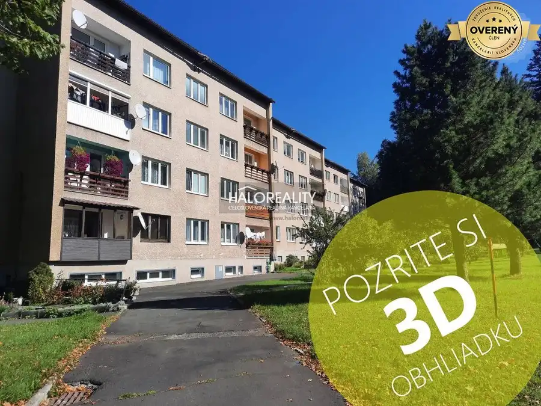
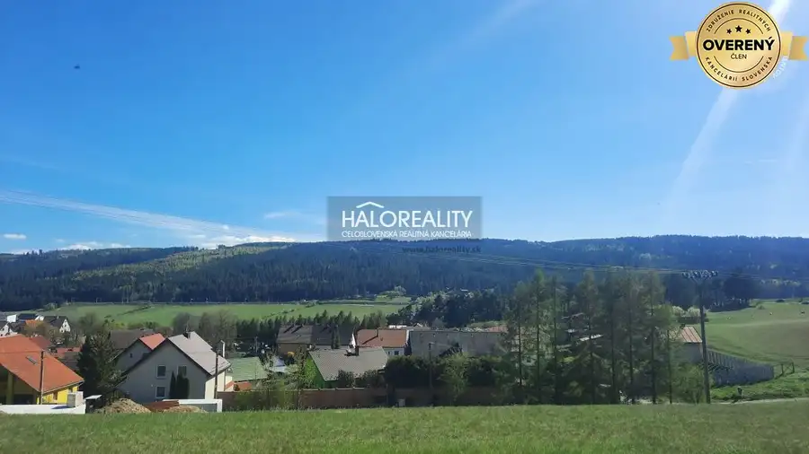
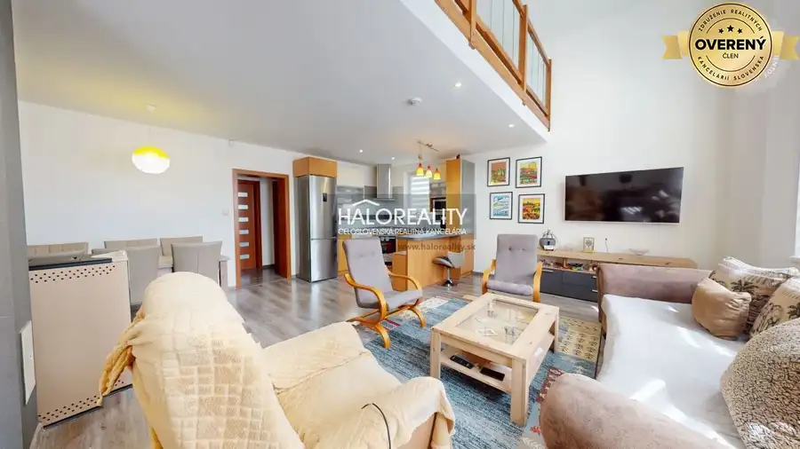

Predaj, rekreačný pozemok Pribylina - ZNÍŽENÁ CENA
Pribylina
- Plocha6059 m²
- Vlastníctvoosobné
- Energetická triedaG
O nehnuteľnosti
Ponúkame na predaj krásny, rovinatý pozemok s výhľadom na Vysoké Tatry a so stavebným povolením o výmere 6059 m2 v katastrálnom území Pribylina, okres Liptovský Mikuláš.
Pozemok je vhodný na stavbu rekreačnej nehnuteľnosti.
Pozemok je rovinatý s krásnym výhľadom na Vysoké Tatry. K pozemku vedie spevnená lesná cesta.
V blízkosti pozemku je elektrika a vodu je potrebné riešiť cez studňu a odpad v tejto lokalite je riešený cez žumpu.
VÝHODY: Ak hľadáte tiché prostredie v lone prírody tak ste na správnej adrese. Tento pozemok Vám zaručí dokonalý relax v lone horskej prírody.
V danej lokalite je už stavebná uzávera takže využite jedinečnú možnosť kúpiť pozemok s platným územným rozhodnutím na stavbu rekreačnej chaty .
LOKALITA: Pozemok sa nachádza neďaleko vstupu do Račkovej a Jamníckej doliny. Nájdete tu ideálne podmienky pre vychádzky aj náročnejšie túry do vrcholov a dolín Západných Tatier a tiež Vysokých Tatier.
Od obce Pribylina je vzdialený približne päť kilometrov.
NÁZOR MAKLÉRA: Veľkosť pozemku Vám zaručí dokonalý relax v lone krásnej, čistej prírody. Využite jedinečnú možnosť kúpiť pozemok so stavebným povolením na stavbu rekreačnej chaty v lokalite kde už platí stavebná uzávera.
ID ponuky: LM-67909
Cena za nehnuteľnosť je KONEČNÁ, vrátane provízie, právneho servisu zabezpečeného advokátom, poradenstva, základného správneho poplatku na katastri a hypotekárnych služieb (viac na našej webovej stránke).
Parametre
| Rozloha pozemku | 6059 m² |
|---|---|
| Poschodie | neuvedené |
| Vlastníctvo | osobné |
| Balkón | nie |
| Lódžia | nie |
| Garáž | nie |
| Výťah | nie |
| Klimatizácia | nie |
| Energetický certifikát | G |
| Dátum zverejnenia | 5. 11. 2024 |
Kde to je
Mohlo by Vás zaujímať

Byt9 Cena dohodouPredaj, trojizbový byt Poprad, Kvetnica - EXKLUZÍVNE... Poprad 3-izbový81 m² Ponúkame na predaj priestranný, slnečný, čiastočne zrekonštruovaný trojizbový byt o výmere 81 m2 s balkónom nachádzajúci sa v lukratívnej a…
Pozemok5 45 600 €Predaj, pozemok pre rodinný dom 726 m2 Gánovce - Z... Gánovce 726 m² Ponúkame na predaj slnečný a mierne svahovitý pozemok o výmere 726 m2. Pozemok je vhodný ako investičný na stavbu rodinného domu alebo rekreačnej…
Rodinné domy9 364 990 €Predaj, rodinný dom Závažná Poruba - NOVOSTAVBA Závažná Poruba 5-izbový318 m² Ponúkame na predaj novostavbu rodinného domu v obci Závažná Poruba, okres Liptovský Mikuláš. Rodinný dom stojí na pozemku o výmere 1037 m2. Postavený…